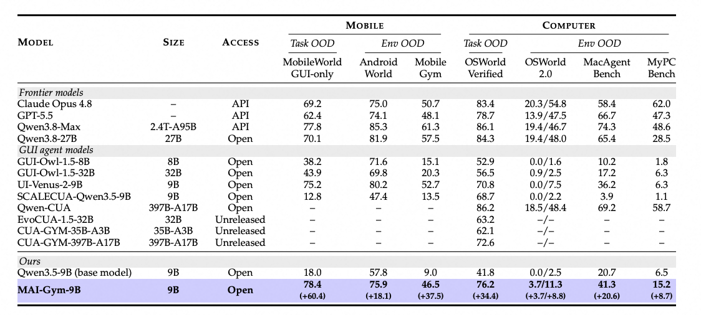

MAI-Gym-9B
Open 9B GUI agent trained with joint mobile–computer online RL: benchmark results, clone-to-real transfer highlights, and quick evaluation setup.
MAI-Gym-9B is an open 9B-parameter GUI agent trained end to end with MAI-Gym. Initialized from Qwen3.5-9B with a mixed mobile–computer SFT warm-up followed by a single joint online reinforcement learning run (GRPO) on synthesized MobileWorld and OSWorld tasks, MAI-Gym-9B achieves state-of-the-art performance among open GUI agents under 10B parameters across mobile and desktop benchmarks.
- Hugging Face Checkpoint:
Tongyi-MAI/MAI-Gym-9B - Technical Report:
arXiv:2610.20939 - Starter RL Config:
configs/mai-gym-9b.yaml
Benchmark Performance#
All results below report native benchmark metrics (%) from Section 4 of the technical report, evaluated through the shared MAI-Gym harness (temperature=0.0). Gains show absolute percentage-point improvements over the base Qwen3.5-9B model.

| Domain | Generalization | Benchmark | Qwen3.5-9B (Base) | MAI-Gym-9B | Gain |
|---|---|---|---|---|---|
| Mobile | Task OOD | MobileWorld (GUI-only) | 18.0 | 78.4 | +60.4 |
| Mobile | Env OOD | AndroidWorld | 57.8 | 75.9 | +18.1 |
| Mobile | Env OOD | MobileGym (partial) | 9.0 | 46.5 | +37.5 |
| Computer | Task OOD | OSWorld-Verified | 41.8 | 76.2 | +34.4 |
| Computer | Env OOD | OSWorld 2.0 (binary / partial) | 0.0 / 2.5 | 3.7 / 11.3 | +3.7 / +8.8 |
| Computer | Env OOD | MacAgentBench | 20.7 | 41.3 | +20.6 |
| Computer | Env OOD | MyPCBench | 6.5 | 15.2 | +8.7 |
Key Empirical Highlights#
- Single Joint Policy Across Mobile & Computer: A single online RL run across mobile and desktop environments generalizes strongly not only to unseen tasks (Task OOD: 78.4% on MobileWorld, 76.2% on OSWorld-Verified), but also to unseen operating systems and benchmark suites (Env OOD: AndroidWorld, MobileGym, OSWorld 2.0, MacAgentBench, and MyPCBench).
- Clone-to-Real Transfer (Mocked Apps → Physical Phone): Training with online RL inside the resettable Railway12306 Real-World Clone transfers directly to the real production Railway12306 app on a physical smartphone, raising task success from 28.8% → 48.1% without live production side effects during training.
- Novel-App Adaptation (42 Novel Mocked Apps): On previously unseen browser-based Novel Apps (Mocked Apps gallery), online RL adapts rapidly to unfamiliar layouts and workflows from verifier reward alone.
For complete frontier & open-model baseline comparisons, SFT-vs-RL ablations, infrastructure scaling up to 20,000 concurrent environments, joint RL vs. model merging, and task-scaling curves, see Section 4 of the technical report.
Running MAI-Gym-9B#
Download and Evaluate Locally (Auto-Served SGLang)#
Download the checkpoint from Hugging Face and let mai-gym eval launch and tear down SGLang automatically:
uvx --from huggingface-hub hf download Tongyi-MAI/MAI-Gym-9B --local-dir "$HOME/mai-gym-data/hf-model"
uv run --with sglang mai-gym eval --config "$HOME/mai-gym-eval/eval.yaml" \
--model "$HOME/mai-gym-data/hf-model" --benchmarks mobileworld --trials 1Evaluate Against an OpenAI-Compatible Endpoint#
If Tongyi-MAI/MAI-Gym-9B is already served (e.g., via SGLang or vLLM):
uv run mai-gym eval --config "$HOME/mai-gym-eval/eval.yaml" \
--model http://127.0.0.1:8000/v1 --model-name Tongyi-MAI/MAI-Gym-9B \
--benchmarks mobileworld osworld-verified --trials 1Training Reference#
Use configs/mai-gym-9b.yaml as a starting point for joint mobile and computer GRPO training. The Online RL Training guide explains how to prepare task pools and run the preset with the prebuilt Slime image.
Next Steps#
- Run your first verified trial in minutes: Quickstart
- Configure all 10 benchmarks and native metrics: Evaluation Guide
- Explore Mocked Apps: Mocked Apps
- Replay model predictions and verifier outcomes: Trajectory Dashboard